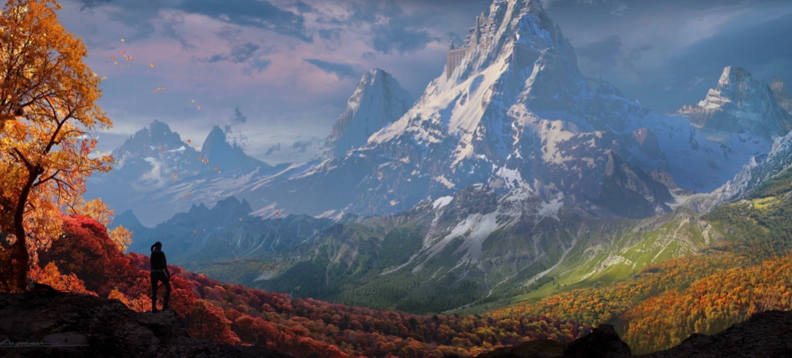
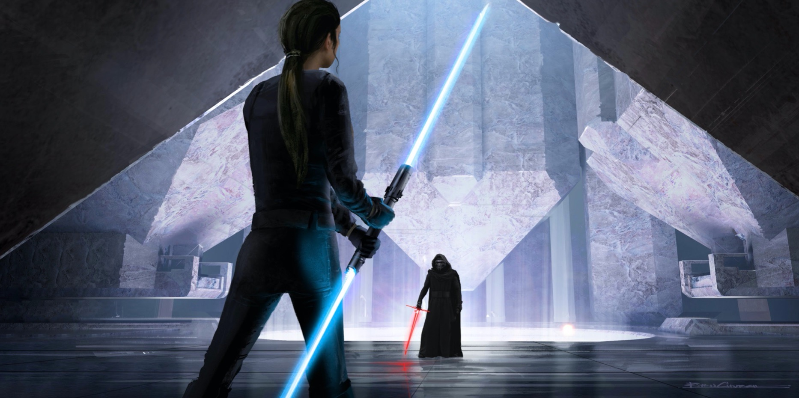
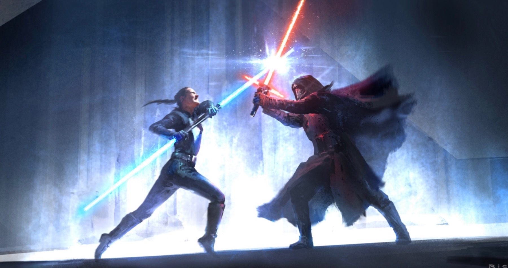
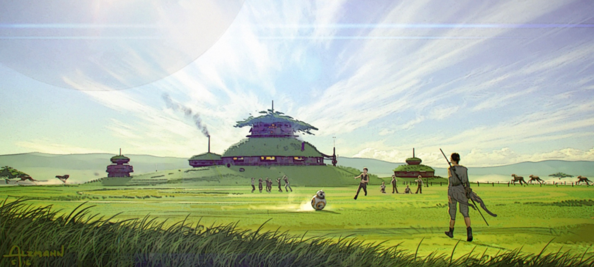

Finn wakes up and emerges from rubble, bleeding and battered.
Noticing an approaching Stormtrooper, he hides. As the Stormtrooper passes, Finn disarms and unmasks the him. The trooper, RK-514, recognizes Finn as the traitor. Finn urges RK-514 to remember who he was before he was abducted and forced to commit heinous acts in his "training". He inspires RK-514 to abandon the First Order, telling him to get a name and "find something worth fighting for".
Rose has been kidnapped.
With her strapped to a torture rack, Chancellor Hux interrogates her, attempting to get her to reveal the new signature codes that Rose had changed on the old Destroyer. Hux comically attempts to use the Force on Rose to get the answer from her and fails miserably. After Rose laughs at him, he reveals an intimidating electric torture device.
Rose braces herself for the pain she's about to suffer.
Leia's shuttle touches down on the planet, and she sneaks her way into a club. In the club, she finds none other than Lando Calrissian. She attempts to convince Lando to join the Resistance, but he refuses and apologizes.
Rey exits hyperspace and finds herself in a swirl of clouds, half red, half blue. The Galactic Void. All of her navigation equipment cuts out, but she closes her eyes, calculates for lightspeed again, and jumps into the black hole of the Void.
Rey experiences a series of flashbacks from Episodes VII and VIII, including moments with Finn, Han Solo, Kylo Ren, Leia, Luke, Snoke, Poe, and even Hattaska Ren.
Suddenly, Rey exits hyperspace and is greeted by colorful planet surrounded by pure black. No stars. The ship powers down and Rey plummets towards Mortis.
Rey crash lands in a riverbed and emerges from the Knife 9 in one piece. She hikes into a leafy forest and watches as the season changes rapidly from Summer to Fall around her. She emerges from the forest on a clifftop, spotting a mysterious temple atop a mountain ahead.
Rey gazes ahead at the mountaintop temple on Mortis.
On the other side of the mountain, Kylo's Silencer lands in a clearing of dead trees. It is Winter where he landed. He spots the temple and journeys on.
R2-D2 and C-3PO emerge from an abandoned building. Ahead of them, they watch a battalion of Brutetroopers, with chrome armor reminiscent of Captain Phasma's, brutalize some civilians who are begging for mercy. They separate children from their parents and push frightened citizens onto prison crafts to be taken to conditioning camps.
Even the Stormtroopers are disturbed by this voilence.
Finn struggles against the wildlife in the sewers of Coruscant. As a colossal Gyrock is about to kill him, he is rescued by Dade, the rebellious kid who witnessed Biss Kova's execution.
Dade takes Finn to an abandoned underground prison, where roughly ten thousand escaped citizens live free from the rule of the First Order. The camp is ready to fight; all they need are ships, weapons, and an army.

The arsenal in the abandoned underground prison.
Finn gives an inspiring speech and rallies the refugees for battle.

Finn gives a rousing speech, rallying the underground refugees for battle.
Rey reaches a plateau, and finds herself surrounded by statues of robed ancients, who are clearly neither Jedi nor Sith. Suddenly, Rey finds herself gripped by a vision.
The vision is of her parents abandoning her on Jakku. They're reluctant and afraid. She pleads her parents to come back, but her father says it's too dangerous. Her mother promises they'll return, which they never do. They disappear onto a ship, leaving Rey crying and alone.
Rey is consumed with anger. She cries out to Luke, asking her to tell her why her parents were afraid. When she doesn't get a response, she ignites her lightsaber and cuts a statue in half. She looks up at the Temple above, anger burning in her eyes.
On the other side of the mountain, Kylo also experiences a vision.
In his vision, Kylo sees the moment he abandoned his family. Han Solo pleads to Ben to come back to their family, telling him he has all that he needs at home. Ben tells Han that Leia is afraid of him, refuses to give up his lightsaber, and leaves. The vision fast-forwards to the moment Kylo plunges the same lightsaber deep in Han Solo's chest on the Starkiller Base catwalk. Han gazes at him with the same look in his eyes as the moment Ben abandoned him.
Disturbed by this vision, Kylo resumes his trek up the mountain.
R2-D2 and C-3PO wander an empty side street of Coruscant. C-3PO remarks that this isn't the Coruscant he remembers.

R2-D2 and C-3PO emerge onto the streets of Coruscant.
A towering AT-MT walker passes by and stops to scan for life forms. Suddenly, several grapple guns fire off from inside an empty building, attaching ziplines to the AT-MT. Finn, accompanied with roughtly 20 Resistance fighters, zipline onto the AT-MT and capture it.
Once captured, the AT-MT immediately fires on a pair of Tie Choppers flying overhead and knocks them both out of the sky.

The Resistance rallies around the stolen walkers.
Commander Sellik informs Chancellor Hux of the insurrection, telling him that it is led by a former FN unit (Finn) who was assisted by a defected regiment of Stormtroopers. Hux orders all FN units to be recalled and the expensive and undisciplined Brutetroopers to be deployed instead.
Meanwhile, two First Order officers attempt to move a beaten and bloody Rose to a maximum security cell block in response to the insurrection. She manages to break free.
Finn, continuing to rally the citizens of Coruscant to battle from atop the AT-MT, is suddenly yanked out by a Brutetrooper. They engage in a brutal battle, but are cut off when sudden blaster fire takes out the Brutetrooper. Finn turns around to see RK-514, accompanied by several other newly defected Stormtroopers.
Connix receives a transmission from Finn informing him of the army ready to storm the Capitol on Coruscant. He relays the message to Leia, Poe, and Chewbacca, who prepare for a full on assault on Coruscant.
Kylo reaches the Temple. As he is about to enter, he stops abruptly, sensing Rey's presence. Rey tells Kylo he is afraid of what he has become because of how alone the Dark Side has left him. Kylo counters by asking her to join his side and rule the galaxy as the Ancients did, with both the Light and the Dark. Rey refuses, telling Kylo she now knows what he did to her parents.
Rey confronts Kylo.
Kylo admits that he killed Rey's parents on Snoke's orders. In a flash of anger, a blast of powerful energy explodes around Rey, sending debris flying around the mountian. She ignites her dual lightsaber and the two clash.
One will not survive the encounter.
The Eclipse Destroyer approaches Coruscant. Leia orders the fleet to planetfall, citing suprise as their only advantage.
Below, Hux orders all Destroyers to the Capitol in hope of eliminating the Resistance all at once.
Poe leads the charge in the Milenium Falcon, followed closely by Chewbacca and BB-8 in an X-Wing and assisted by a barrage of fire from the Eclipse's heavy weapons above.

The Milenium Falcon leads the charge.
On the streets, Finn marches with the Resistance, thousands strong now. More and more rebels emerge from side alleys, amassing a huge army.

The Resistance marches on Coruscant.
R2-D2 and C-3PO notice a First Order astromech attempting to send a distress signal and deactivate it. However, they're too late; a squadron of Tie Bombers swarm the Resistance, bombarding them with explosions. The onslaught seems insurmountable.
Just as the Resistance seems overwhelmed, the Falcon, X-Wings, and B-Wings dive from the sky, causing the Tie Squadron to back off. The Resistance is emboldened, and the battle rages on.

Battle on the streets of Coruscant.
Rey and Kylo's battle rages on. Rey slices off Kylo's mask. Rey attacks angrily and wildly as Kylo methodically blocks and counters. He lands a blow across Rey's face, leaving a scar across her face from her cheek to her forehead.
Rey collapses to the ground, screaming. She's blinded.
Kylo points his lightsaber at her heart and she looks up, crying blood. He turns around and enters the temple, leaving Rey, collapsed and motionless on the steps.
The First Order fleet arrives in space and engages the Eclipse, Milenium Falcon, and Chewie's X-Wing.
Near the ground, Resistance ships weave through buildings and begin landing blows on the Capitol itself, Tie Fighters in hot pursuit. As the Capitol is rocked by explosions, Chancellor Hux is confused and enraged that the Resistance has not been annihilated. Commander Sellik informs Hux that the First Order isn't equipped to take on ships of the magnitude of the stolen Dreadnaught.
Rose, eavesdropping on the conversation, is shocked when Hux orders the hyperdrive to be engaged. The Capitol is a ship! She immediately sets out to disable the hyperdrive.
Above, Poe orders Chewbacca to assist on the ground. Chewbacca enters Coruscant's atmosphere, but is immediately shot down. Finn notices the fallen fighter and rushes with a squad to rescue the pilot, only to discover Chewie and BB-8. Their happy reunion is cut short by a fresh batch of First Order reinforcements, backed by heavy cannon fire from the Capitol above.
Meanwhile, Rose manages to get in contact with Leia, informing her that the Capitol is a ship and asking for the keycodes to disable the hyperdrive. R2-D2, who's supposedly with Finn, has them.
Rose connects with Finn and both are happy to hear each other's voices. Rose tells Finn that he needs to escort R2 to a terminal at the base of the Capitol. Finn manages to meet up with R2 and 3PO, but R2 is immediately hit by blaster fire.

C-3PO mourns over a dead R2-D2.
It's all up to BB-8 now. Rose uploads the codes to BB-8, who immediately takes off towards the terminal as Finn, Chewbacca, and the defected Stormtroopers provide cover fire.

BB-8 rushes to the Capitol ship terminal.
An explosion knocks Finn off his feat. He and Chewbacca recognize that they must retreat, but a surprisingly emotional C-3PO refuses to leave a motionless R2-D2's side. Chewbacca grabs both the droids and hoists them up, the crew begin running back for cover. Chewbacca is hit multiple times, stumbling and almost falling. In pain, he presses on.
In space, Poe futilely fights off approaching First Order reinforcements. There's too many for him to stop, and many First Order fighters begin entering the planet's atmosphere. On the Eclipse, Leia watches in defeat as First Order Destroyers continue to appear from hyperspace at an alarming and overwhelming rate. Under her breath she mutters, "Luke... I'm sorry".
In the center of Temple, Kylo spots a deep void, surrounded by statues of the Ancients and sealed with a slab of unpolished marble. He removes the slab and looks down into the well beneath the temple, only to find... nothing.
He frantically looks around the Temple for answers, but only finds sculptures and runes that he cannot decipher. He begins to lash out and destroy statues with his lightsaber, only to be interrupted by a mysterious voice.
"You've lost, Ben", Luke says, his ghost stepping into the light. He tells Ben that the Dark Side failed him, just as it did his father.
Kylo tells Luke his father was weak, but Luke tells him that Vader's love for his family is what ultimately saved him, and that he wishes Ben had the same love for his. Kylo, enraged, swings his saber at the ghost.
Luke catches the blade with his bare hand.

Luke catches Kylo's lightsaber.
With their faces inches away, Kylo grunts, "I'll be stronger than any Skywalker has ever been."
Luke smirks, "You are no Skywalker."
Rey stirs on the steps and calls out for Luke. He tells Kylo that he can't defeat us, because he's connected with all living things. Rey attempts to drag her shattered body up the Temple steps, but she gives out.
Meanwhile, Leia feels Rey's pain. Luke continues monologuing about how the Force connects all living things as the mutual struggles of Rose, Poe, and Finn all play out. They all call out to each other, and can all seemingly feel each others' pain to an extent. Luke says, "I am not alone. Obi Wan was right. We're connected. All living things. The Force surrounds us. It penetrates us. It binds the galaxy together. We are one. Bound by the Force. And we will not be broken."
With these last words, the Last Jedi rises. Rey unwraps a strip of cloth from the bandage on her hand and blindfolds her bloody eyes. In the Temple, Luke vanishes, revealing Rey standing tall in the doorway, blind, bruised, determined.
She says, "Our Masters were wrong. I will not deny my anger. And I will not reject my love. I am the darkness. And I am the light."
Her damaged lightsaber flies into her hands and she fights Kylo, blindfolded and guided only by the Force.
In the Eclipse, Connix informs Leia that more ships are arriving from the Outer Rim. Leia orders a retreat, but Connix says they aren't First Order ships.
Triumphantly, Lando arrives, accompanied by nearly a thousand ships. They begin flooding into Coruscant, giving the troops on the ground a second wind.
Leia orders Poe to join the battle on the ground and he gladly agrees. He recklessly flies the falcon close to the ground, barreling through the legs of enemy AT-MT's.
Within the Capitol, Hux realizes that he has lost. He orders Commander Sellik to bomb the city and eliminate every last living thing on it. Utterly defeated, he retreats to his chamber, grabs his prized vintage lightsaber, and impales himself with it.

Hux impales himself on the blade of his prized collectible lightsaber. In the script, this lightsaber is purple, hinting that it's Mace Windu's long lost blade.
Rey and Kylo fight for awhile. They're evenly matched.
Rey and Kylo duel, one last time.
However, with one swift stroke, Rey shatter's Kylo's blade at the hilt and mutilates his hand. She separates her dual lightsaber and holds one blade pointed at Kylo's chest.
Kylo is stunned by the power and vitality from Rey. It appears as if she's almost glowing. She may be the strongest well of Living Force ever.
He reaches out his good hand and extracts the Living Force from her.
She screams in pain, and Kylo rises, not only recovered, but the scars on his face completely healed. He continues to drain the life from Rey, who looks weaker than ever.
With her last breaths, Rey reaches out her hand and begs Ben to spare her. Leia feels the disturbance and pleads to Ben through the Force. He hears her voice and abruptly stops.
"Ben. Come back. Come home."
Ben takes Rey's hand and allows the Living Force to flow back into her. The two collapse into one another, each propping the other up. Ben is in worse shape and is on the verge of death.
"Solana," he says with his last breath. "Your name. Rey Solana."
Rey watches his eyes dim, and it is clear he no longer possesses the yellowish eyes of the Dark Side. Ben Solo dies, and Rey collapses, barely alive herself.
They've fought to the death.
The Resistance rallies at the base of the Capitol, which is beginning to take off. They all take cover, and worry for Rose, who is still trapped on the inside.
Rose manages to find her way out through an escape pod. Finn finds her pod and asks her if she successfully deactivated the hyperdrive. Rose tells Finn that she couldn't figure it out.
Fortunately, though, she was able to interfere with their lightspeed calculations. The Capitol jumps into hyperspace, but immediately collides with a distant planet, causing a massive explosion that can be seen even from the surface of Coruscant.
The massive explosion serves as a beacon of hope, rallying the galaxy to fight off the remnants of the shattered First Order. Despite this, Finn, Poe, and Leia can all sense that Rey is gone. With heavy hearts, they fight on.
Light fills the space around Rey's limp body, and particles of energy begin rising up, bringing Rey with them. Light engulfs the frame.
When the light fades, Rey finds herself in a completely foreign place. An Astral Plane of sorts.
Rey finds herself surrounded by glimmers of light. Three glow brighter and larger than the rest, revealing themselves to be Yoda, Luke Skywalker, and Obi-Wan Kenobi.
The Jedi Masters tell Rey that she taught them much, for their point of view was narrow. She embraced both the Dark Side and the Light Side. She found balance in the Force by finding balance within herself.
Yoda explains to Rey how she helped them see past the narrow views of the Jedi.
Rey is given the choice to remain, where she will find serenity, knowledge, and peace; or to return, where she will find a galaxy in turmoil, full of pain, suffering, and loss.
Rey makes her decision.
A Resistance Flag rises at the base of the Capitol. There is a procession to present the heroes of the war with medals of honor. After 40 years of service, Chewie finally gets his medal.
Finn and Leia talk about how they can no longer feel Rey's presence. They can only feel a balance that they've never felt before, which they supsect is her. Poe says she'll never stop looking for her.
C-3PO and Leia then watch over the repair over R2, who beeps back to life. His memory banks are restored, providing a recap of all of his adventures from Episode I all the way to Episode IX.
Leia steps outside and looks up at a field of stars. A distant star falls, giving her peace.
On a meadow-filled planet with green pastures and fields of tall grass, Finn recounts the heroic story of Rey to a group of young children, with Rose listening and smiling. He says that he believes she'll come back some day. The kids then run into the pastures. Among them are BB-8, Dade, and the Broom Boy from Episode VIII. This place is clearly a refuge for Force-sensitive youth that Finn and Rose built.
Suddenly, Finn feels something that startles him. Somewhere far away, Poe and Chewbacca feel it too and immediately set course for Modesta.
Finn notices a glimmer of light in the distance. It's Rey, healthier than ever. Her eyes are restored and the scar on her face is faded, but still somewhat noticeable.

BB-8 spots something in the distance.
BB-8 leads the charge as Finn and the excited children run towards her.
Rey approaches the sanctuary on Modesta.
This is where Rey will train a new generation of Jedi and pass down what she has learned--that only an understanding of the balance within can lead to peace and justice in the galaxy.